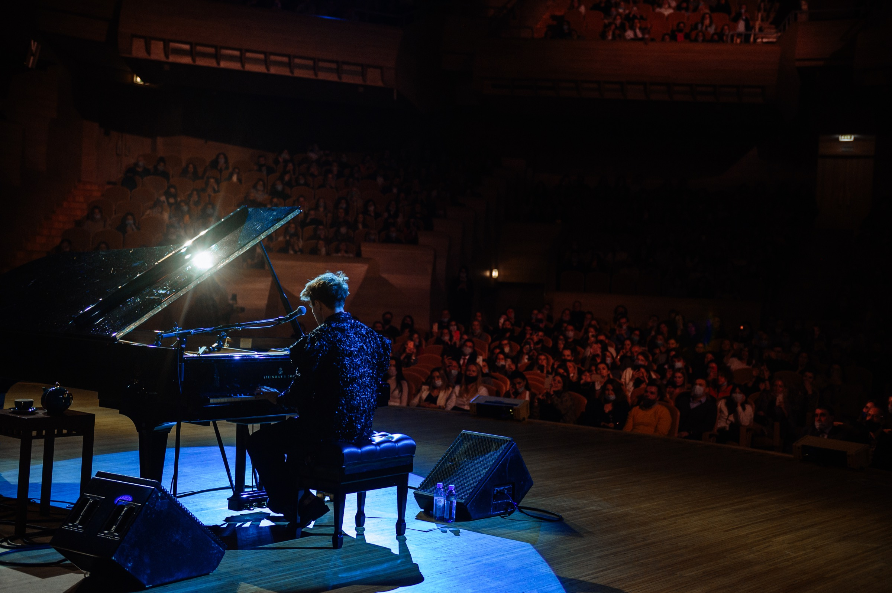

Learn To Play Your Favorite Song In Days, Not Years.
Come hear what happens when piano finally starts making sense. Join Stephen Ridley live at your own piano for 90 minutes and discover the simple patterns hiding inside the songs you already love.
- You do not need to read music before you come.
- You do not need years of lessons.
- You do not even need to believe you're “musical.”
Bring a piano, bring one song you wish you could play, and come ready to experience music differently.
Stephen will show you how four simple chords can suddenly become songs you recognise, how to start playing without depending on a page, and why 10 focused minutes a day can get you further than hours of repetitive practice.
40,000+ students have already learned the Ridley way. Now Stephen is teaching it live.

Taught live by Stephen Ridley


Stephen doesn't teach piano the way most people were taught.
He teaches it the way he actually plays it.
You don't want another piano course. You want to sit down and play.
- The song you turn up in the car.
- The song connected to someone you love.
- The one you've imagined yourself playing for years.
You don't want to spend another six months getting better at exercises so that someday you might get to the music. You want the music.
And if you've tried piano before, you probably know this feeling:
- You can follow a piece you've practised, but take the page away and suddenly you have no idea what to play.
- You've tried lessons, apps, YouTube videos or courses, yet sitting down and simply playing still feels strangely out of reach.
- You practise the same section again and again, but the progress never seems to match the effort.
- You learned when you were younger, came back years later, and somehow found yourself hitting the same wall.
- Someone says, “Play something,” and despite all the time you've spent at the piano, your mind goes completely blank.
Eventually, it's very easy to decide the problem must be you.
- Maybe you're not musical.
- Maybe you're too old.
- Maybe you don't have enough time.
- Maybe other people simply have something you don't.
Stephen wants to challenge that idea in the first few minutes of this masterclass.
Because sometimes the problem isn't your ability. It's where you were told to begin.
What happens when Stephen sits down at a piano?
- He isn't mentally reading thousands of individual notes.
- He isn't trying to remember every song he's ever learned.
- He sees patterns.
- He hears relationships.
- He understands what the music is doing.
And once you begin seeing some of those same patterns, piano starts looking very different. That's what Stephen is going to show you live.
Ninety minutes. Bring the piano you already own.
A working session, not a lecture. Stephen plays, breaks down what he just did, and you try it while he is still on the call.
Four chords become music you know
Stephen will sit down and show you what happens when four simple chords stop sounding like an exercise and suddenly become songs you've heard your entire life. This is usually the moment people start thinking: wait, is piano really built like this?
Stop depending on the page
You'll see what Stephen is paying attention to when he plays a song, and how patterns can give you another way into music besides memorising every note. Sheet music can still be useful. It just doesn't have to be the price of admission.
Give ten minutes a job
“Practise piano” is a terrible instruction. What do you actually do? For how long? In what order? Stephen will show you the simple structure behind the Ridley Academy approach to 10 focused minutes a day, so sitting down has a purpose instead of becoming another vague obligation.
Understand the song instead of memorising it
Once you begin recognising what songs have in common, every new piece stops feeling like starting from zero. You begin noticing the things underneath the notes: the patterns, the movement, the musical logic. That is when piano starts feeling less like memorisation and more like music.
Then bring us your song
At the end, Stephen will take song requests from people attending live and show you how he would start thinking about them at the piano. Bring the one you've secretly wanted to play. You may be surprised by what he sees in it.
“It's so simple, and now I'm not scared of it.”
That is one of our favourite things a student has ever said. Because the first transformation isn't always becoming an amazing pianist. Sometimes it is much smaller.
You sit down. You try something. You recognise what you're hearing. And suddenly the story you've been telling yourself about piano gets a little harder to believe.
I find myself, for the first time, enjoying playing music.Ridley Academy student
That's the point. Not becoming better at piano homework. Playing music.
What if 90 minutes changed the way you look at your piano?
Not because you mastered the instrument in one night. You won't. But because something that has always looked complicated suddenly starts revealing a pattern. Because the page stops feeling like the only way in. Because the song you've wanted to play starts looking less impossible. Because instead of wondering whether you're musical enough, you finally get to put your hands on the piano and find out.
One piano. One evening. One song you love.
Come see what your hands can do with it.
Reserve My Free Seat90 minutes. Live online. No cost.
At the end of the masterclass, Stephen will also explain how you can continue learning with Ridley Academy if you want more help and a clear path forward. You are completely welcome to take the masterclass and leave it there. Either way, come for the music.